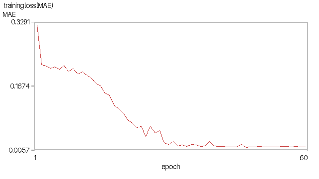
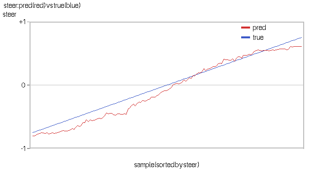
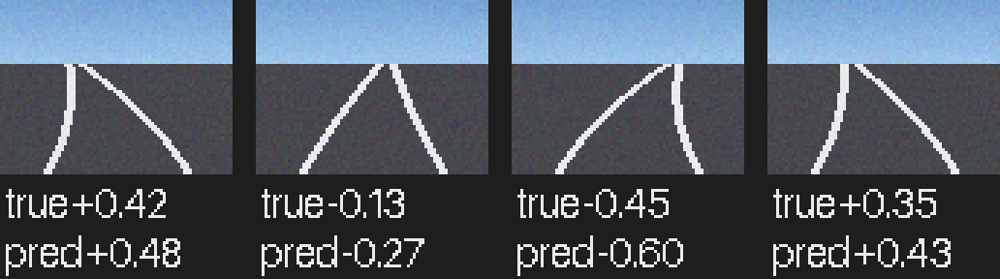
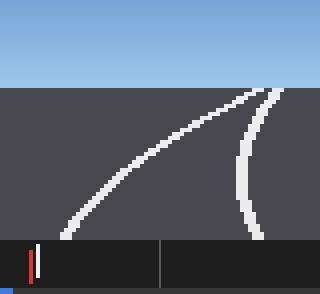

CARLA 端到端神经网络（图像 → 控制）
对应课程作业四：端到端模型——输入相机图像、直接输出控制指令， 中间不再有"感知目标 → 解析规划 → 控制"的人工分层。
1. 概述与目标
本模块在 自动驾驶代理 示例的基础上做拓展：已有示例用规则式方式 沿路径点行驶，本模块把整条链路替换为一个可训练的卷积神经网络：
代码位于 src/ground/carla_end_to_end_nn/。
1.1 与已有示例的区别
| 对比项 | 已有「自动驾驶代理」（ad_agent） | 本拓展模块 |
|---|---|---|
| 技术路线 | carla_ros_bridge + 规则式局部规划 |
CARLA Python API 直连 + 端到端 CNN |
| 是否依赖 ros-bridge | 必须编译并运行 ros-bridge | 不需要，仅需 carla Python 客户端 |
| 输入 | 路径点 + 地图 | 相机图像（原始像素） |
| 决策方式 | 规则式（查地图算路径） | 神经网络（图像 → 转向，端到端） |
| 感知/规划分层 | 分层明确 | 无分层，图像直接变成控制量 |
| 训练方式 | 无 | 行为克隆：专家驾驶采集数据后训练 CNN |
| 框架依赖 | — | 默认纯 numpy（无需 TensorFlow/PyTorch） |
| 无 CARLA / 无图形界面时 | 无法运行 | --headless --demo 离线自证并导出曲线 |
1.2 与仓库中其它地面载具模块的区分
| 模块 | 输入 | 算法 | 是否含神经网络 |
|---|---|---|---|
手动控制（set_up_and_connect_to_carla） |
键盘 | 复用 ros-bridge 内置逻辑 | 否 |
路径点发布器（waypoint） |
CARLA 地图 | 几何查询 | 否 |
自动驾驶代理（ad_agent） |
路径点 + 地图 | 规则式局部规划 | 否 |
传感器感知与轨迹跟踪（carla_perception_control） |
相机 + 雷达 + 轨迹 | 感知 NN + 控制 NN（分层） | 是 |
激光雷达建图与规划（carla_mapping_navigation） |
雷达 + 目标点 | 占用栅格 + 规划 NN | 是 |
| 本模块 | 仅相机图像 | 单个端到端 CNN | 是（端到端） |
2. 计算原理
2.1 端到端学习的思想
传统自动驾驶分三个模块：感知（识别车道线/障碍）→ 规划（算路径）→ 控制（算转向）。 端到端把这三级合成一个函数，直接从像素映射到控制量：
参数 通过行为克隆（behavioral cloning）从专家驾驶数据中学得—— 这也是 NVIDIA 在 2016 年 "End to End Learning for Self-Driving Cars" 中采用的思路。
2.2 卷积神经网络结构
各层含义：
- 卷积层：提取局部空间特征（车道线边缘、方向、曲率），权重共享使参数量与图像尺寸解耦。
- ReLU：，提供非线性，缓解梯度消失。
- 最大池化： 窗口取最大值，提供平移不变性并降维。
- 全局平均池化：把每个通道的特征图压成一个数，避免全连接层的参数爆炸。
- tanh 输出层：把结果压到 ，与 CARLA 的
steer值域一致。
2.3 损失函数与反向传播
采用均方误差（等价于对转向的高斯假设下极大似然）：
梯度经链式法则逐层回传。最大池化的反向传播需要特别注意：
即梯度只回传给窗口内取到最大值的那一个位置。
一个会让网络完全学不动的实现缺陷
早期实现把池化输出梯度直接赋给窗口内全部 个位置，等价于把梯度放大 倍、并把梯度错误地分给了未被选中的元素。后果是网络塌缩成常数输出：
| 指标 | 缺陷版本 | 修复后 |
|---|---|---|
| 输出标准差 | 0.00062（几乎不随输入变化） | 0.516 |
| 预测/标签相关系数 | +0.293 | +0.992 |
| 方向判对率 | 50.0%（等于瞎猜） | 98.0% |
| MAE | 0.398（差于基线 0.403） | 0.0936 |
缺陷版本那一列是某一次运行的值：塌缩程度与初始化有关，重跑可能出现 输出标准差 0.00000、相关系数 +0.000 的完全塌缩，但方向判对率始终卡在 50%、 MAE 始终退回到"恒输出 0"的基线附近。修复后那一列可稳定复现。
该缺陷已用有限差分梯度校验与单元测试 test_maxpool_backward_only_max_position
永久卡死。
2.4 训练/推理一致性
训练时网络输出为 ，推理时必须做同样的 tanh：
若推理时遗漏 tanh，输出是无界线性值。实测曾出现预测值达 ， 而标签在 ，MAE 高达 13.47——训练与推理不一致是端到端模型最常见的隐性缺陷。
2.5 行为克隆的数据采集
端到端学习能否成功，关键在于图像与标签是否有因果关系。
错误做法：标签与图像无关
早期版本用人为正弦信号 steer = 0.5·sin(i/12) + 0.2·cos(i/5) 作为标签。
该标签由帧序号决定，与画面内容毫无关系——网络只能学到标签的均值，
永远学不会"看路打方向"。
本模块采用行为克隆：由专家控制器实际驾驶车辆，同时记录相机图像与该时刻 专家打出的转向。专家为纯跟踪几何律：
其中 为轴距， 为 steer 到前轮转角的折算系数，
为前视距离。因为专家确实在"看着路开"，图像与标签天然对应。
采集顺序也必须注意：先 tick() 推进场景 → 读当前图像与位姿 → 算此刻专家转向
→ 记为标签。若反过来（先施加控制再 tick 再读图），图像与标签会错开一帧。
3. 算法流程
collect（需 CARLA）——行为克隆采集：
循环 frames 次：
world.tick() 推进场景与相机
读当前相机图像 + 车辆位姿
用地图路点 API 前视 → 专家纯跟踪转向
保存 (图像.npy, 专家转向标签)
把专家转向应用到车辆
train（无需 CARLA）：
读数据集 → 归一化到 [0,1]
→ CNN 前向（conv→relu→pool→conv→relu→pool→GAP→FC→tanh）
→ MSE 损失 → 反向传播（maxpool 按 argmax 回传）
→ 保存模型 JSON
test（需 CARLA）：
加载 CNN → 循环：tick → 取图像 → CNN 推理 steer → 应用到车辆
headless --demo（无需 CARLA / 无图形界面 / 无 TensorFlow）：
合成道路图像（车道线弯曲量 = 标签）
→ 训练 CNN → 导出损失曲线、预测对比曲线、样本图像
4. 源码解析
4.1 main.py — 主入口
包根的 main.py 只是转发壳，实现放在 carla_end_to_end_nn/main.py。原因是
setup.py 里写的是 packages=[package_name]，colcon build 只会把
carla_end_to_end_nn/ 这个目录装进 site-packages，包根的文件不会被安装；而
ROS 2 节点是按 carla_end_to_end_nn.main 导入的。若实现留在包根，ros2 launch
一启动就会 ModuleNotFoundError: No module named 'carla_end_to_end_nn.main'
（这一条由单元测试 test_node_imports_resolve_inside_installed_package 守住）。
| 函数 | 作用 |
|---|---|
synth_road_image() |
合成带透视车道线的道路图像，弯曲量由 steer 决定 |
synth_dataset() |
合成端到端数据集（图像 + 转向标签） |
expert_steer() |
专家控制器（离线版纯跟踪律） |
carla_expert_steer() |
CARLA 场景专家：沿地图路点前视算转向（行为克隆标签来源） |
train_cnn() |
训练端到端 CNN（numpy / tf 两种后端） |
cnn_predict() / load_cnn() |
推理与模型加载（训练/推理一致，含 tanh） |
collect_carla() |
行为克隆采集（先 tick 再读图，避免图文错帧） |
test_carla() |
端到端自主驾驶 |
run_offline_demo() |
离线取证：合成图像训练并导出证据图 |
render_loss_png() / render_pred_vs_true_png() / render_samples_png() |
证据图导出 |
4.2 nn_models.py — 纯 numpy 神经网络库
SimpleCNN： 通道两层卷积 + 两层最大池化 + 全局平均池化 + 全连接 tanh 输出。
含前向传播、MSE 损失、完整反向传播（maxpool 按 argmax 回传）与 JSON 存取。
4.3 end_to_end_node.py — ROS 2 节点
订阅相机图像，发布 /carla/ego_vehicle/end_to_end/image（sensor_msgs/Image）、
steer_cmd（std_msgs/Float32）、control（Float32MultiArray）。
4.4 carla_common.py — CARLA API 封装
connect()、spawn_vehicle()、make_rgb_camera()、apply_control()、
get_location()/get_yaw()，同步模式固定步长 0.05 s。
5. 仿真运行步骤
5.1 支持与测试环境
| 组件 | 版本 / 说明 |
|---|---|
| 操作系统 | Windows 10/11 原生；Ubuntu 20.04（Noetic）/ 22.04（Humble） |
| 仿真器 | CARLA 0.9.16（服务端运行于有 GPU 的宿主机） |
| Python | 3.10+（CARLA 0.9.16 客户端 wheel 为 cp310/cp311/cp312） |
| 依赖 | 仅 numpy（端到端 CNN 为纯 numpy 实现，无需 TensorFlow/PyTorch） |
| ROS | ROS 1 Noetic 或 ROS 2 Humble（launch 封装） |
5.2 新手路线：从已有示例到本模块
| 序号 | 做什么 | 出处 |
|---|---|---|
| 1 | 启动 CARLA 服务端 | 设置并连接到 Carla 模拟器 →「启动 Carla 服务器」 |
| 2 | 查看宿主机 IP、确认虚拟机连通 | 同上 →「使用 Carla 客户端启动 Ego Vehicle」 |
| — | ★ 在此切换到本模块 | 以下与本模块相关 |
| 3 | 装 carla 客户端与 numpy |
本页 5.3 节 |
| 4 | 离线取证（无需 CARLA，先确认链路通） | 本页 5.5 节 |
| 5 | 采集 → 训练 → 端到端驾驶 | 本页 5.7 ~ 5.9 节 |
5.3 步骤 0：环境准备
CARLA 服务端的下载安装与启动、宿主机 IP 与端口 2000 的查看、虚拟机网络设置等 通用步骤与已有示例完全相同，本文不重复，请参考 设置并连接到 Carla 模拟器：
| 需要做的事 | 参考位置 |
|---|---|
| 启动 CARLA 服务端、选择地图 | 设置并连接到 Carla 模拟器 →「启动 Carla 服务器」 |
查看宿主机 IP、填写 host 参数 |
同上 →「使用 Carla 客户端启动 Ego Vehicle」 |
连接失败、黑屏、numpy 报错排查 |
同上 →「常见问题」 |
本模块特有、需要额外安装的只有 CARLA 0.9.16 的 Python 客户端与 numpy：
pip3 install -r src/ground/carla_end_to_end_nn/requirements.txt
pip3 install <CARLA>/PythonAPI/carla/dist/carla-0.9.16-cp310-cp310-manylinux_2_31_x86_64.whl
不需要 TensorFlow
端到端 CNN 为纯 numpy 实现（含手写反向传播），默认后端 --backend numpy。
若希望使用 tf.keras 版本，可加 --backend tf 并自行安装 TensorFlow。
5.4 步骤 1：编译本功能包（ROS 2）
本模块的源代码位于本仓库（OpenHUTB/ros2）的
src/ground/carla_end_to_end_nn/。ROS 2 要求功能包放在工作空间的 src/ 目录下，
因此先把本仓库克隆到工作空间的 src/：
mkdir -p ~/ros2_ws/src && cd ~/ros2_ws/src
git clone https://github.com/OpenHUTB/ros2.git # 换成你自己的 fork 亦可
本模块的代码还没进 master 时，clone 下来是找不到这个功能包的
git clone 默认拉 master。若本模块的 PR 尚未合并，colcon build
--packages-select carla_end_to_end_nn 会报 "Package not found"。
此时改成拉本模块所在的分支（或合并后再拉）：
git clone -b carla-homework-04 https://github.com/himyinjun1234/ros2.git
合并进 master 之后，用上面的默认命令即可。
克隆后的目录关系如下，colcon build 必须在工作空间根目录执行：
~/ros2_ws/ <- 工作空间根目录，colcon 在这里运行
└── src/
└── ros2/ <- 本仓库（git clone 得到）
└── src/ground/
└── carla_end_to_end_nn/ <- 本模块源代码
因此后文写的 src/ground/carla_end_to_end_nn/...，实际路径是
~/ros2_ws/src/ros2/src/ground/carla_end_to_end_nn/...。编译并激活环境：
cd ~/ros2_ws
colcon build --packages-select carla_end_to_end_nn --symlink-install
source install/setup.bash
若本仓库已克隆在别处，把上面的
~/ros2_ws/src/ros2换成实际路径即可， 只要保证执行colcon build的工作空间根目录下存在src/。
5.5 步骤 2：离线取证（无需 CARLA、无图形界面、无 TensorFlow）
python3 src/ground/carla_end_to_end_nn/main.py --headless --demo \
--epochs 60 --samples 150 --save_dir ~/shots
该模式用合成道路图像（车道线弯曲量与标签一致）训练端到端 CNN 并导出 3 张证据图。 适合在无 3D 加速的虚拟机中先确认整条链路可用。纯 numpy 训练约需 3~4 分钟。
输出会打印 MAE / RMSE / 转向方向一致率 / 预测-标签相关系数，并把
(标签, 预测) 落成 steer_pred_vs_true.csv，读者可自行复算相关系数。
3 张证据图带标题、坐标轴刻度与图例（用 bitmap_font.py 的位图字体直接写像素，
不依赖 matplotlib / Pillow）。
5.6 步骤 3：验证与 CARLA 服务端的连接
命令里的 192.168.8.1 是运行 CARLA 服务端的宿主机（Windows）IP：
在宿主机上执行 ipconfig，取 VMware 虚拟网卡（VMnet8）的 IPv4 地址即可
（本机该地址为 192.168.8.1，虚拟机 ens33 为 192.168.8.131，两者同网段）。
查看方式与已有示例一致，详见
设置并连接到 Carla 模拟器
→「使用 Carla 客户端启动 Ego Vehicle」。
python3 -c "import carla; c=carla.Client('192.168.8.1',2000); c.set_timeout(10); print('CONNECT OK:', c.get_world().get_map().name)"
5.7 步骤 4：行为克隆采集数据（需 CARLA）
python3 src/ground/carla_end_to_end_nn/main.py --mode collect \
--host 192.168.8.1 --frames 300 --out_dir dataset
专家控制器会沿车道行驶，同时保存每帧的相机图像与专家转向：
collect 0/300 已保存 1 专家 steer=+0.012
collect 50/300 已保存 51 专家 steer=-0.084
...
数据采集完成：300 帧 → dataset
图像: dataset/images（.npy，uint8 HWC）
标签: dataset/labels.txt
5.8 步骤 5：训练端到端 CNN
python3 src/ground/carla_end_to_end_nn/main.py --mode train \
--data_dir dataset --epochs 60 --model_path models/cnn.json
5.9 步骤 6：端到端自主驾驶（仅凭相机图像）
# 模式 A：独立运行（--host 填宿主机 IP）
python3 src/ground/carla_end_to_end_nn/main.py --mode test \
--host 192.168.8.1 --model_path models/cnn.json --sim_time 20
# 模式 B：ROS 2 Humble
ros2 launch carla_end_to_end_nn main.launch.py host:=192.168.8.1 model_path:=models/cnn.json
# 模式 C：ROS 1 Noetic —— 入口用 main.sh（会自动挑 python3.10）
# roslaunch 只能按 main.py 的 shebang 执行它，而 Noetic 的 python3 是 3.8，
# 装不上 CARLA 0.9.16 的 cp310+ wheel，补了可执行位也会卡在 import carla。
# 若系统 python3 本身已是 3.10+，也可用：
# roslaunch carla_end_to_end_nn main.launch host:=192.168.8.1 mode:=test
bash src/ground/carla_end_to_end_nn/main.sh --host 192.168.8.1 --mode test
也可用一键脚本：bash main.sh --host 192.168.8.1。
5.10 运行效果
训练损失（MAE）下降曲线：

预测转向 vs 真实转向（红=CNN 预测，蓝=专家标签，按真实转向排序； 两条曲线高度贴合说明网络学会了映射）：

合成道路图像样本（车道线弯曲方向随转向标签变化，网络正是从这些视觉特征学起）：

动图：图像 → 转向（24 帧，每帧 0.12 s，72 KB。上半部分是前视相机图像， 车道线随转向弯向一侧；下半部分指示条里白线是专家标签（这条弯道该打多少转向）、 红线是 CNN 预测，中间灰线为零转向；底部细条是播放进度。按真实转向从小到大 扫一遍，能直观看到"路往哪弯"与"方向盘往哪打"的对应关系）：

动图用
synth_road_image(..., noise=0)重新合成：GIF 只有 256 色，而默认带 σ=5 的相机噪声时一帧就有上万种颜色，索引化不了，压缩率也会崩掉。
终端输出示例（离线取证模式，实测）：
================================================================
作业四 离线自检取证模式（合成道路图像，不需要 CARLA）
================================================================
合成道路图像数据集: (150, 60, 80, 3)，转向标签范围 [-0.80, +0.80]
数据集: X(150, 60, 80, 3) Y(150,) backend=numpy
cnn epoch 12 loss=0.19601
cnn epoch 24 loss=0.06045
cnn epoch 36 loss=0.01160
cnn epoch 48 loss=0.00693
cnn epoch 60 loss=0.00654
端到端 CNN 训练 MAE = 0.09364
模型已保存(纯 numpy JSON): ~/shots/cnn_steer.json
端到端 CNN 评估：MAE = 0.09364，RMSE = 0.11124，转向方向一致率 = 98.0%
零输出基线 MAE = 0.40268（MAE 明显低于基线才说明网络学到了映射）
已导出取证图：
~/shots/cnn_loss.png
~/shots/steer_pred_vs_true.png
~/shots/road_samples.png
5.11 常见问题
Q1：训练后损失不下降、方向判对率约 50%？
先检查两点：(a) 数据集里的图像与标签是否有因果关系——若标签是人为信号
（如正弦），网络学不到任何东西，必须改用行为克隆采集；
(b) maxpool 反向传播是否按 argmax 回传。可用
python3 test/test_end_to_end_logic.py 回归验证这两点。
Q2：MAE 出现几十甚至十几的数值？
这是推理时遗漏 tanh 的典型症状——转向值域应在 ，MAE 不可能大于 2。
检查 predict() 与训练是否使用同一输出激活。
Q3：--mode collect/test 报"缺少 carla 模块"？
需安装 CARLA 0.9.16 的 Python 客户端 wheel，见 5.3 节。
只想验证算法可改用 --headless --demo（不需要 CARLA）。
Q4：纯 numpy 训练太慢？
端到端 CNN 为纯 numpy 实现（无 GPU 加速），训练时间与样本量成正比。
可减小 --samples，或改用 --backend tf（需自行安装 TensorFlow）。
Q5：合成图像上表现好，实车上不work？ 合成图像只用于验证链路与算法正确性。真实场景必须用 5.7 节的行为克隆采集 （或使用 CARLA 公开数据集）训练，并注意训练/测试的图像分布一致性。
6. 性能评价
6.1 指标定义
平均绝对误差 MAE：
均方根误差 RMSE：
转向方向一致率（判对"左转/右转/不转"的比例）：
零输出基线：。 网络 MAE 必须明显低于该基线，才能说明它真的学到了映射（否则等价于恒输出 0）。
6.2 实测结果（离线取证模式，本机实测）
口径：训练集上的指标，数据为合成道路图像（非真实 CARLA 相机）。 相关系数可由
steer_pred_vs_true.csv独立复算。
| 指标 | 数值 |
|---|---|
| MAE | 0.09364 |
| RMSE | 0.11124 |
| 转向方向一致率 | 98.0% |
| 零输出基线 MAE | 0.40268（网络 MAE 比基线低 4.3 倍） |
| 训练损失（60 epoch） | 0.5415 → 0.00654 |
| 预测/标签相关系数 | +0.992（实测 +0.99176） |
| 单元测试 | 27 PASS / 0 FAIL（约 30 s） |
6.3 调优过程记录
| 优化项 | 优化前 | 优化后 | 说明 |
|---|---|---|---|
| 实现移进 Python 包 | ros2 launch 启动即 ModuleNotFoundError: No module named 'carla_end_to_end_nn.main' |
节点正常启动 | setup.py 只装 packages=[package_name]，包根的 main.py 不会被安装 |
| maxpool 梯度按 argmax 回传 | 输出标准差 0.00062，相关系数 +0.293，方向判对率 50% | 标准差 0.516，相关系数 +0.992，判对率 98% | 最严重缺陷；原实现把梯度均摊到窗口全部位置 |
| 推理补上 tanh | MAE 13.47（输出无界） | MAE 0.0936 | 训练/推理输出不一致 |
| 标签改为行为克隆 | 标签由帧序号正弦信号生成，与图像无因果关系 | 专家沿车道驾驶产生标签 | 图像与标签天然相关 |
| 采集顺序先 tick 后读图 | 图文错开一帧 | 图与标签严格对应 | 避免隐性错位 |
| 超参调优 | lr=0.05、40 epoch，loss 卡在 0.214 | lr=0.15、60 epoch，loss 0.0065 | 提升收敛速度与精度 |
| 默认后端改为纯 numpy | 默认依赖 TensorFlow | 仅需 numpy | 降低环境门槛，VM 上可直接跑 |
6.4 结论
- 端到端可行：单个 CNN 仅凭 的相机图像即可输出转向， 方向判对率 98.0%、相关系数 +0.992，验证了"像素 → 控制"的直接映射可以被学到。
- 无分层：推理路径中不存在任何人工的感知/规划环节，转向完全由网络权重决定。
- 与逐层方案对比：作业二/三采用"感知 NN + 控制 NN"的分层方案， 可解释性强、易调试；本模块端到端方案链路最短、不依赖人工特征， 但可解释性弱、对数据分布敏感，两者是工程上的取舍。